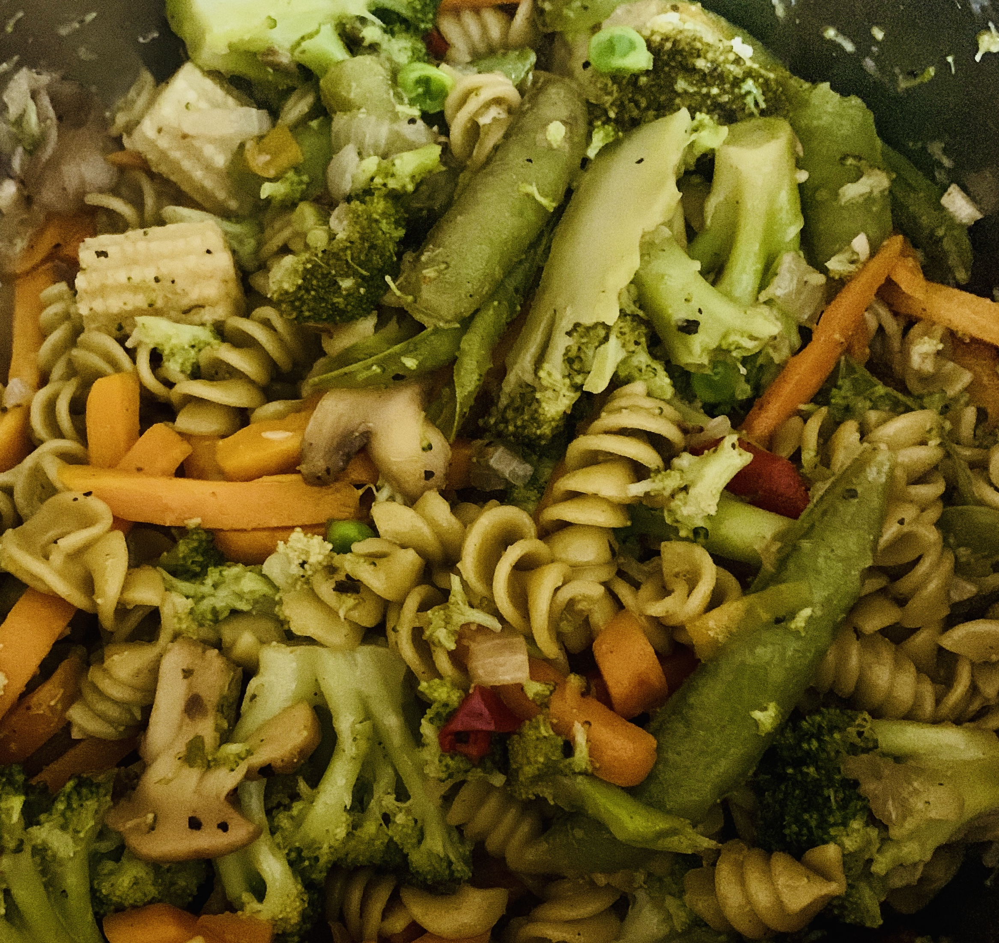

Instant Pot Pasta Primavera
A quick, healthy side dish in the Instant Pot®. I serve it with baked chicken thighs!

- Prep: 5 mins
- Cook: 20 mins
- Additional: 5 mins
- Total: 30 mins
- Servings: 6
Ingredients
- 2 tablespoons unsalted butter
- 1 small yellow onion, chopped
- 2 cloves garlic, minced
- ground black pepper to taste
- 1 medium lemon, juiced
- ⅓ cup Marsala cooking wine
- ½ (16 ounce) package tri-color rotini pasta
- 1 ½ cups water, or as needed to cover
- 2 (12 ounce) packages frozen stir-fry vegetables
- salt to taste
Steps
- Step
Turn on a multi-functional pressure cooker (such as Instant Pot®) and select Saute function. Add butter and stir until melted. Add onion and cook until translucent, 5 to 7 minutes. Add garlic and cook until fragrant and butter starts to burn, 1 to 2 minutes. Season with pepper.
- Step
Carefully pour in lemon juice; pot will release steam. Add cooking wine and immediately turn pot off. Scrape the bottom of the pot with a spoon to loosen any browned bits. Add pasta, then just enough water to barely cover it.
- Step
Place a steamer basket on top of the pasta. Add frozen vegetables and season with salt and pepper. Close and lock the lid. Select high pressure according to manufacturer's instructions; set timer for 1 minute. Allow 10 to 15 minutes for pressure to build.
- Step
Release pressure using the natural-release method according to manufacturer's instructions, for 2 minutes, then release remaining pressure carefully using the quick-release method. Unlock and remove the lid. Remove steamer basket and stir vegetables into the pasta.